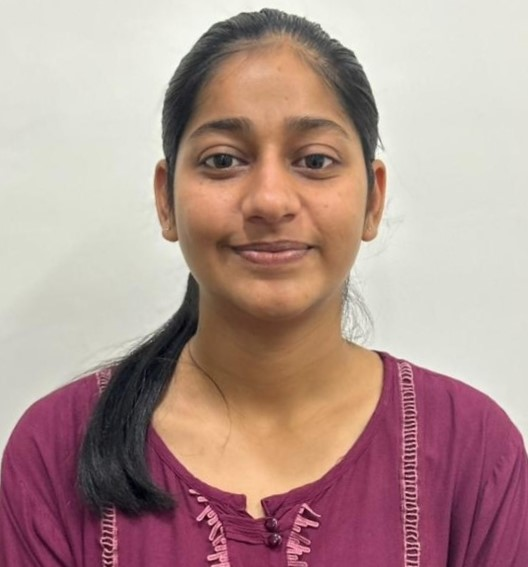

Research Scholar, Department of Mathematics
Malaviya National Institute of Technology, Jaipur
Pooja is a PhD scholar in the Department of Mathematics at Malaviya National Institute of Technology (MNIT) Jaipur, working with Dr. Priyanka Harjule. Her research is in computational statistics and natural language processing: assessing how reliable BERT-based language models are on question answering tasks, and the statistical analysis of socio-economic data, including a study of the effect of issued loans on the income of self-help group women in Rajasthan. Her work has appeared in the Journal of Experimental & Theoretical Artificial Intelligence and at ICT4SD 2023, Goa.
Publications from doctoral research at MAITRI Lab. Click a paper to read it.